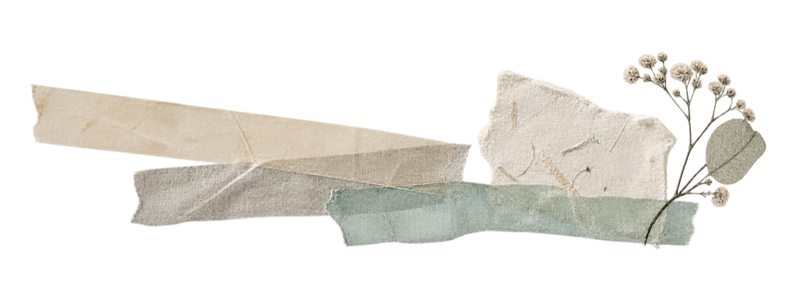

Paper · washi · stamps
Editions
A small, considered library for making a page feel like yours.

Inside the app
Choose what
belongs today.
Editions are curated packs of pieces you can place, resize, rotate, and layer. The everyday shelves stay useful all year, and a holiday shelf adds a little colour without taking over the page. Market & Café is free for everyone; dab-dab+ opens the rest.
The material rule
Light enough
to move.
Notes should feel like paper. Tape should feel like tape. The most useful decoration is the piece that leaves your page breathable.
A little texture, never a heavy hand.
The shelves
Useful pieces,
quietly gathered.
Every pack is made to give a page another material or point of view, without asking it to become a collage.
Paper Notes + Paper Washi
Airy blank notes and lightweight strips for a typed thought, a photo, or a small piece of handwriting. Cut a washi tape of your own, too, in your pattern and colours, with torn or clean ends.
Daily Rituals · Market & Café · Riviera Beach Life · Coffee Menu
Small, familiar motifs for ordinary routines, places, meals, and the details worth keeping, including a Coffee Menu of thirty watercolour drinks, from Espresso to Coffee Negroni. Show any of them softer, or in their original colour.
Date, place, botanical, and custom postmarks
Press a mark onto the day, make a stamp from your own centre art, snap a photo and press it as a quick stamp, or keep a place close.
Holiday Paper
Ten washi tapes and nine blank papers for harvest, winter and the new year. A small addition to the studio, not the story of the app.
The page is yours first.dab-dab+ adds room to play; it never asks you to decorate
Keep exploring
See the daily
rhythm.
Start with one page, then come back when you want to understand the rest.